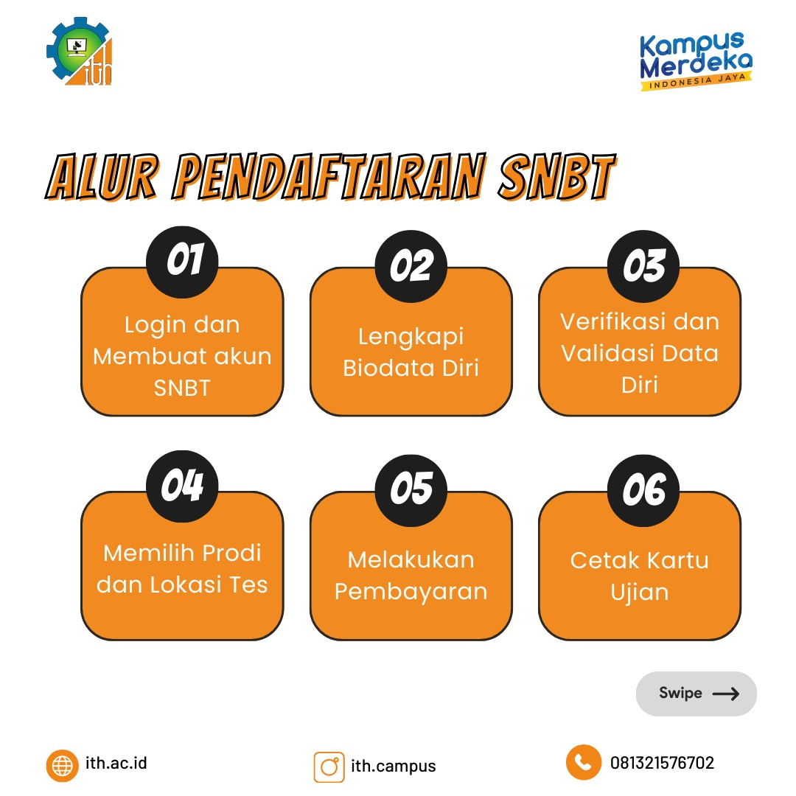
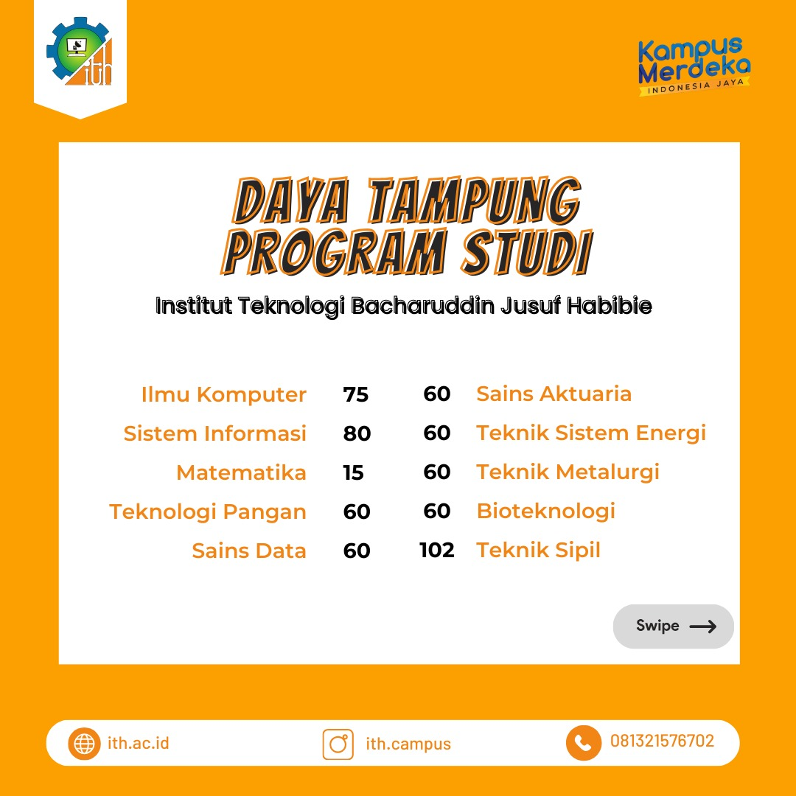

Institut Teknologi BJ Habibie (ITH) kini mulai membuka pendaftaran seleksi nasional berdasarkan tes (SNBT) dan ujian tertulis berbasis komputer (UTBK). ITH membuka pendaftaran di 10 program studi
Satu-satunya kampus teknologi di Indonesia Timur itu siap menerima 632 mahasiswa baru dalam seleksi tersebut. Pendaftaran seleksi dibuka secara nasional di seluruh Indonesia. Pendaftaran akan ditutup 5 April Mendatang.
"ITH di tahun ajaran 2024 ini membuka 10 program studi. Kita buka pendaftaran seleksi secara nasional. Selanjutnya kita akan menerima ratusan mahasiswa baru," ketua tim Penerimaan Mahasiswa Baru (PMB) Rakhmadi Rahman, S.T., M. Kom, Rabu 3 April 2004.
Rakhmadi menjelaskan calon peserta seleksi mendaftar di Portal SNPMB kemdikbud di link berikut: https://portal-snpmb.bppp.kemdikbud.go.id/
"Selanjutnya verifikasi dan validasi data diri. Memilih prodi dan lokasi tes. Kemudian melakukan pembayaran dan terakhir mencetak kartu ujiannya"
Adapun 10 Program studi dan daya tampung mahasiswa baru yakni;